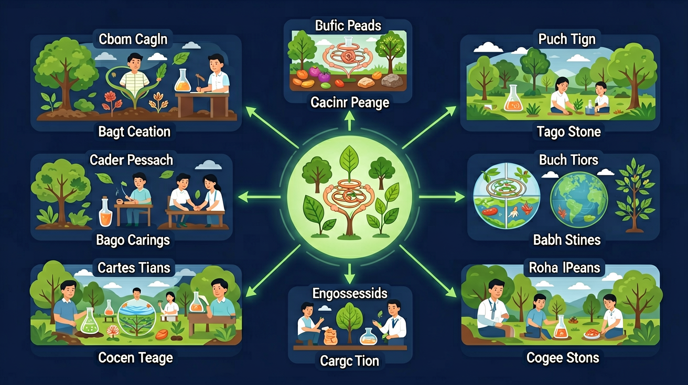

草→兔→狐→蘑菇，能量在生物之间传递。认识食物链、食物网，理解生物多样性与自然选择。

🎯 能说出食物链中生产者、消费者和分解者的作用
🎯 能判断给定生态系统中生物间的能量流动方向
🎯 能分析人类活动对生态平衡的具体影响
❓ 为什么狼吃羊不算‘坏’？
❓ 如果蚊子灭绝了会怎样？
❓ 人类在食物链的顶端吗？
学完这一课，这些问题你都能自信地回答。
食物链起点通常是？
下列哪种关系不属于食物链？
选择或输入后，这节课会围绕你的问题展开。
在「草→蚱蜢→青蛙→蛇」这条食物链中，蚱蜢属于什么角色？
先选一个，错了正好暴露你的前概念，我们一起纠正。
在生态系统里，生物之间通过吃与被吃的关系形成食物链。绿色植物通过光合作用把太阳能变成化学能，是生产者；吃植物的动物是初级消费者；再被更高层动物吃的是次级消费者；分解者（细菌、真菌）把动植物的遗体分解，归还土壤。
能量沿食物链单向流动，且逐级递减——每传递一级，大量能量以热的形式散失。所以食物链通常只有 3～5 个环节，顶级消费者数量最少。
自然界中，一种生物往往吃多种食物、也被多种生物吃，许多食物链交织成食物网。如果某种生物数量骤减（如大量捕杀青蛙），以它为食的蛇会减少，它吃的昆虫可能暴增，进而影响植物——牵一发而动全身。
保护生物多样性就是保护生态系统的稳定。环境变化时，适应环境的个体更容易生存和繁殖，这就是自然选择的雏形。
在「自然选择」模拟中，观察不同性状的个体在环境变化下的生存差异，联系本课：适应环境的特征更容易保留。
💡 试试切换环境颜色，观察哪种颜色的「兔子」更容易被鸟发现或隐藏。
把生物卡片按能量流动顺序拖到正确位置（从生产者到分解者）。
排完 4 个环节后自动判分。
生态系统中，生物与生物、生物与环境相互依存。食物链表示“谁吃谁”的关系，箭头指向吃东西的一方，也表示能量流动方向。绿色植物是生产者，动物多是消费者，细菌真菌等是分解者。食物链中某一环节减少，会影响上下游。
写食物链从植物开始，箭头指向捕食者。分析“如果……会怎样”时，顺着食物链看谁变多、谁变少。
常见误区：常见误区是把箭头画反，写成“狐→兔→草”，颠倒了能量流动方向。
食物链中箭头的正确含义是？
在“草→虫→鸟”中，若虫被大量杀死，短期内鸟可能？
「生物与环境：食物链与生态平衡」不只存在于课本：在日常生活里找到一个真实场景——例如家里、上学路上或新闻中的实际例子，用本课的结论解释它。
把你的场景讲给 AI 学伴听，让它帮你判断解释是否准确、条件是否完整。
用积木比喻：绿色植物是底座，食草动物是中层，食肉动物是顶端
能量像接力棒传递，每级生物只能拿到约10%的能量
对比森林和池塘食物链：起点不同（树vs藻类）但结构相似
观察校园花坛：蚜虫→瓢虫→蜘蛛→麻雀形成微型食物链
设计阳台生态箱：用厨余堆肥养蚯蚓，蚯蚓喂乌龟
针对该池塘提出三条改进措施
关于能量在生态系统中的流动，哪种说法正确？
选一个并查看反馈。
先独立作答，再点选项查看对错与错因。
下列哪项最能解释鲤鱼减少和小龙虾增多的现象？
若彻底清除小龙虾，可能导致：
景观射灯对生态系统的影响属于：
写出该池塘的一条完整食物链：____→____→____
答案：芦苇→鲤鱼→小龙虾
需包含生产者、消费者和顶级消费者
人类向池塘丢弃包装袋属于破坏生态平衡的____因素
答案：人为
区分自然变化与人类活动影响
✅ 箭头永远指向能量接收方（如草→兔）
💡 混淆‘被吃’和‘能量去向’
✅ 补上蘑菇、细菌等分解者角色
💡 忽视肉眼不可见的生物
口诀：植物生产能量传，动物消费往上攀，分解者来收尾，生态平衡不能毁
类比：像手机充电：太阳能是充电宝，生物们轮流借电用
某湿地食物链：藻类→水蚤→小鱼→鹭鸟。若小鱼减少会怎样？
农田喷洒农药后，为什么老鹰数量也减少了？
设计生态瓶时，为什么要先放水草再放鱼？
点击节点跳转到对应章节；可切换布局。